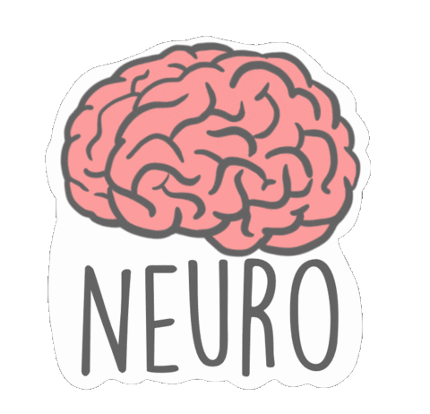
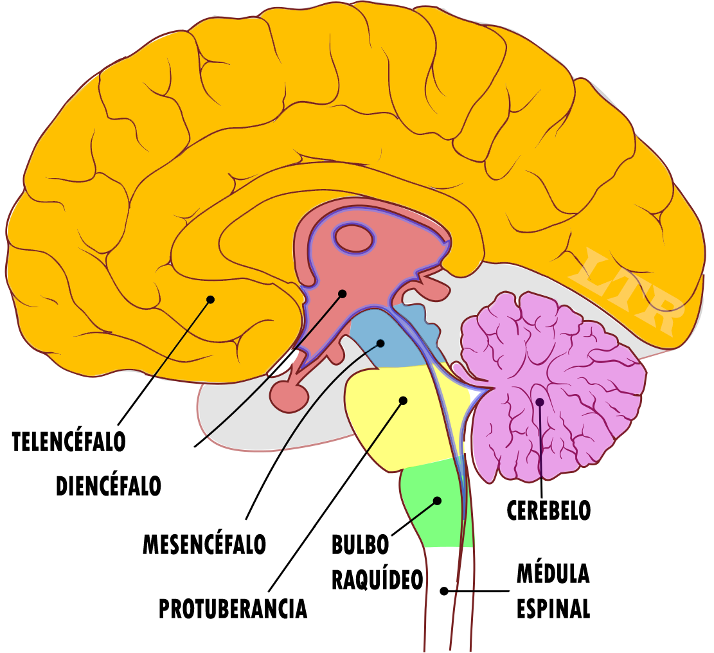

Función de relación
La función de relación se basa en la captación de las variaciones del medio (los denominados estímulos), su evaluación y en la emisión de las respuestas adecuadas.
Sistemas y aparatos implicados
Receptores
Los receptores, también conocidos como "órganos de los sentidos", están en íntimo contacto con el sistema nervioso. Ejemplos incluyen los ojos, la nariz, la lengua, etc.
Sistema nervioso
El sistema nervioso está constituido básicamente por el tejido nervioso, compuesto por las células nerviosas o neuronas.
Sistema endocrino
El sistema endocrino está formado por las glándulas endocrinas, que segregan sustancias (hormonas) a la sangre, provocando efectos específicos en las células.
Efectores
Los efectores son los órganos y aparatos encargados de realizar las respuestas, como movimientos y secreciones.
Las neuronas y la transmisión del impulso nervioso
Las neuronas son células especializadas en la transmisión de información gracias a la generación de corrientes eléctricas. Hay neuronas sensitivas y motoras que conducen el impulso nervioso en diferentes direcciones.
El sistema nervioso humano
El sistema nervioso presenta dos partes: el sistema nervioso central (SNC) y el sistema nervioso periférico (SNP).
Sistema nervioso central (SNC)
Está constituido por el encéfalo y la médula espinal, protegidos por huesos y membranas llamadas meninges. El SNC recibe e interpreta los impulsos sensitivos y genera los impulsos motores.
Sistema nervioso periférico (SNP)
Es el conjunto de nervios que conectan el SNC con diversas partes del cuerpo. Los nervios pueden ser sensitivos, motores o mixtos y se clasifican según diferentes criterios.
Partes del Sistema nervioso Central (SNC)

Encéfalo
Es una masa de neuronas compuesta por sustancia gris y blanca. Se divide en diferentes partes:
- Cerebro: Es la parte más grande y en él reside la memoria, la capacidad de pensar y el lenguaje.
- Sistema límbico: Se encuentra en el centro profundo del cerebro y recibe y procesa emociones y respuestas emocionales.
- Tálamo: Actúa seleccionando las informaciones que van hacia el cerebro.
- Hipotálamo: Regula el sistema nervioso autónomo y tiene influencia en la glándula hipófisis.
- Cerebelo: Interviene controlando los músculos responsables del mantenimiento de la postura y el equilibrio corporal.
- Bulbo raquídeo: Se encuentra bajo el cerebelo y controla funciones autónomas como la respiración y la presión sanguínea.
Médula espinal
Presenta sustancia gris en su interior y sustancia blanca en el exterior. Los nervios espinales salen de ella, inervando músculos, glándulas y órganos cercanos.